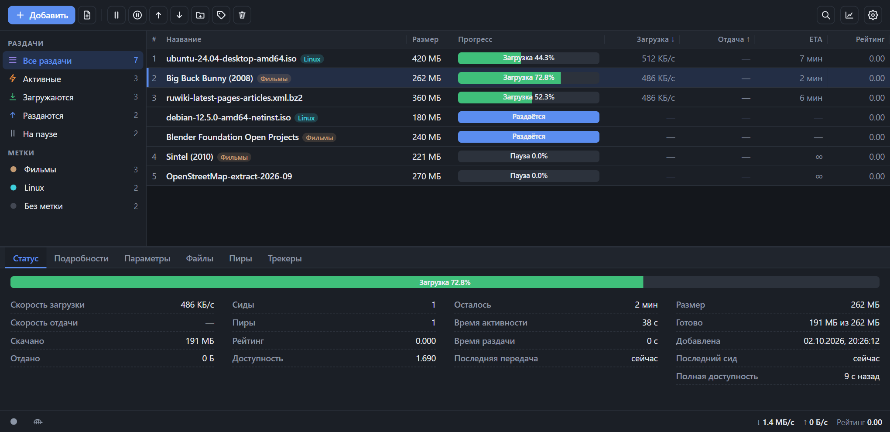
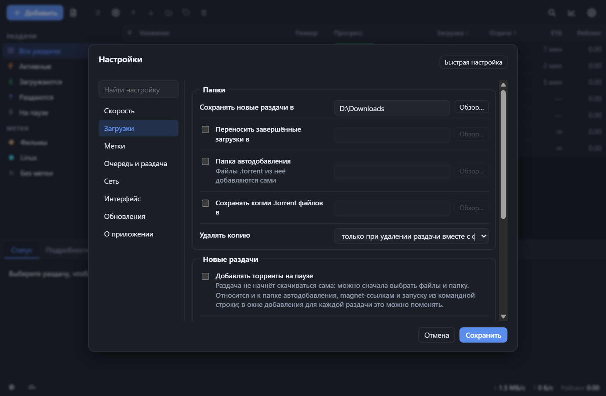
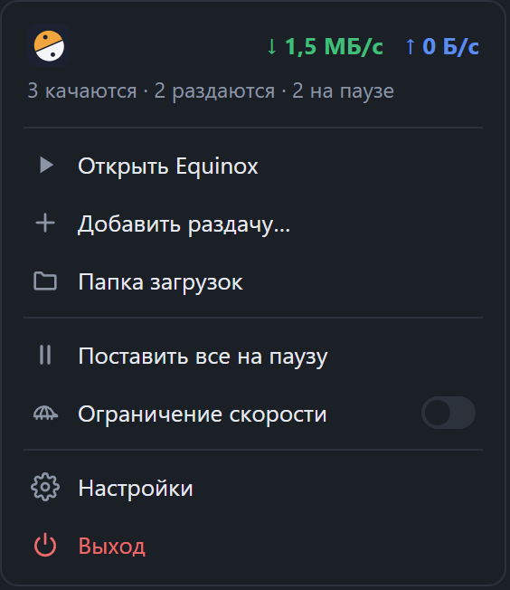

Торрент-клиент для Windows: лёгкий, быстрый, без настройки
Скачали, запустили, качаете. Никаких ключей, аккаунтов и серверов. Окно, трей и автообновление, как у обычной программы.
Скачать для Windows
Что умеет
Magnet и .torrent
Добавление ссылкой, файлом, перетаскиванием. Создание своих .torrent и папка слежения.
Смотреть на ходу
Последовательная загрузка и ссылка для плеера: видео и музыка играют, пока качаются.
Очереди и лимиты
Очередь загрузок, лимиты скорости, режим «черепаха» по расписанию, лимиты рейтинга.
Сетевые возможности
Проброс порта UPnP / NAT-PMP, DHT, PEX, uTP, шифрование, IPv6.
Порядок в списке
Метки с папками и цветами, поиск, фильтры, настраиваемые столбцы, тёмная и светлая темы.
Живёт в трее
Скорость и счётчики в меню трея, автозапуск, автообновление с проверкой контрольной суммы.
Настройки и трей


Установка
Equinox-Setup-…exe | Установщик. Ставится для текущего пользователя, права администратора не нужны. |
Equinox-pc-…zip | Портативная версия: окно и трей, установка не нужна. |
Equinox-server-…zip | Версия без окна: интерфейс открывается в браузере. |
Нужен Microsoft Edge WebView2 Runtime (есть в Windows 11 и в большинстве Windows 10). Сборки не подписаны, поэтому SmartScreen может предупредить при первом запуске: «Подробнее» → «Выполнить в любом случае».